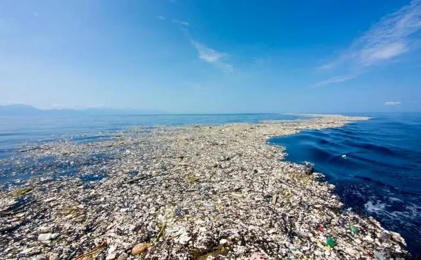

PacificTrashHeap
PacificTrashHeap
Background
Located between Japan and the West Coast of North America, the Great Pacific Garbage Patch is a gyre of
oceanic litter particles in the central North Pacific Ocean.
The Pacific Garbage Patch was discovered in 1997 by Charles J. Moore.
In 2018, it was at an estimated size of 620,000 square miles with up to 129,000 metric tons of plastic.
The patch is rapidly accumulating and has increased 10-fold every decade since 1945. There are about 6 pounds of plastic for every pound of plankton.

Composition
The Pacific Trash Heap formed over time as ocean currents gathered pollution. The rotational pattern from the Pacific takes in waste from the north
(e.g. coasts of North America and Japan). Up to 86% of plastic pollution was reported to come from offshore fishing and agriculture,
specifically from Japan, China, South Korea, the USA and Taiwan. Microplastics make up 9.4% of the 1.8 trillion pieces of plastic but only 8% of the total weight.
Effects
The plastic waste in the trash heap especially affect Pacific sea animals. Loggerhead sea turtles often confuse plastic bags for jellyfish, albatrosses
unintentionally feed synthetic resin pellets to their chicks, and seals and other oceanic mammals are at risk of becoming entangled and drowning
in abandoned plastic fishing nets.
